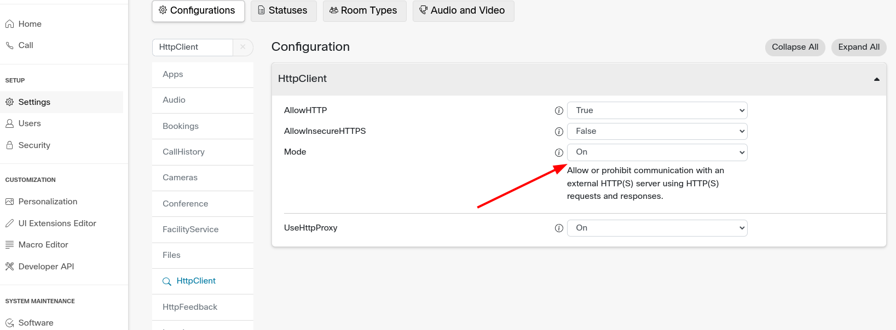
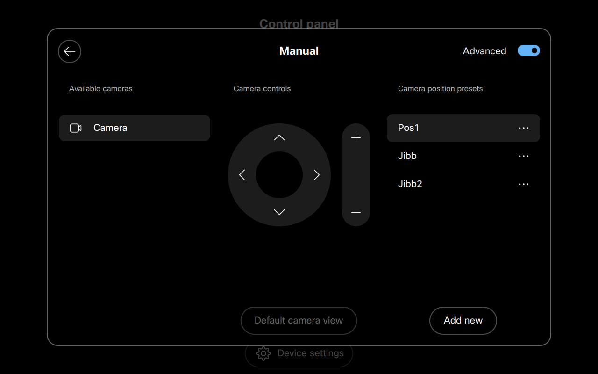

Examples group/ namespace/ category.
- Source:
Members
(static) 0-Browser Start Session
Browser start session example.
- Click on source to see the script example.
- Check the html example below for full example were jibb.js is the sdk.
- Source:
Example
<!DOCTYPE html>
<html>
<body>
<h1>The script testing start session</h1>
<script type="module">
import * as JIBB from './jibb.js'
</script>
<script type="module" src="startSession.js">
</script>
</body>
</html>(static) 1-webexDeviceExample
webex Device Macro simple example.
The device user should be able to walk into the meeting room, tap on the JIBB icon on the UI and it will automatically snap to the whiteboard and start detecting/sharing the JIBB Workspace.Description:
- start and stop button.
- camera will snap to whiteboard that admin preset.
- Click on source to see the script example.
File Description
- jibb.js -> entry point
- jibbWebexXapi.js -> JIBB library for Webex devices
Installation
- downalod webexMacrosExamples.zip from https://github.com/jibb-open/jssdk/releases.
- Log into your Cisco Room Device as and admin.
- Navigate to the setup -> settings -> HttpClient, set Mode to On.
- 
- Navigate to the Macro Editor.
- Import and Save each of the following Macros into the Room System: jibbWebexXapi.js found under jssdk folder and jibb.js from desired example.
- Edite jibb.js by adding your personal Jibb ApiKey to in line 49, to get your ApiKey visit https://app.jibb.ai/ then navigate to personal settings and click Generate.
- Edite jibb.js by add desired Email to receive a pdf Recording of the session to in line 50.
- Save and activate jibb.js .
- After refreshing the webage you will find jibb panel automatically added in the UI Extension Editor. variable uiExtension line 193 is is the exported XML panel
- Using touch panel create a camera preset "Jibb" (case sensitive) so that camera postion will be set automatically
- If not set script will work but camera postions needs to be set manually before clicking start.
- 
Click on source to see the script example.
(static) 2-webexDeviceExample camera Control
webex Device Macro camera Control example.
The device user should be able to walk into the meeting room, tap on the JIBB icon, then using the UI be able to make sure the camera is aiming at the surface and can click start to detect and share * their writing.Description:
- start and stop button.
- camera will snap to whiteboard that admin preset.
- user have a camera control.
- Click on source to see the script example.
File Description
- jibb.js -> entry point
- jibbWebexXapi.js -> JIBB library for Webex devices
Installation
- downalod webexMacrosExamples.zip from https://github.com/jibb-open/jssdk/releases.
- Log into your Cisco Room Device as and admin.
- Navigate to the setup -> settings -> HttpClient, set Mode to On.
- Navigate to the Macro Editor.
- Import and Save each of the following Macros into the Room System: jibbWebexXapi.js found under jssdk folder and jibb.js from desired example.
- Edite jibb.js by adding your personal Jibb ApiKey to in line 49, to get your ApiKey visit https://app.jibb.ai/ then navigate to personal settings and click Generate.
- Edite jibb.js by add desired Email to receive a pdf Recording of the session to in line 50.
- Save and activate jibb.js .
- After refreshing the webage you will find jibb panel automatically added in the UI Extension Editor. variable uiExtension line 262 is is the exported XML panel
- Using touch panel create a camera preset "Jibb" (case sensitive) so that camera postion will be set automatically
- If not set script will work but camera postions needs to be set manually before clicking start.
Click on source to see the script example.
(static) 3-webexDeviceExample Camera Presets
webex Device Macro Camera Presets example.
The device user should be able to walk into the meeting room, tap on the JIBB icon, then using the UI be able to select which whiteboard they want to detect.Description:
- start and stop button.
- camera will snap to whiteboard that admin preset.
- user have a camera control tab.
- Admin can set two camera postion and link them to buttons so user can switch between two whiteborads.
- Click on source to see the script example.
File Description
- jibb.js -> entry point
- jibbWebexXapi.js -> JIBB library for Webex devices
Installation
- downalod webexMacrosExamples.zip from https://github.com/jibb-open/jssdk/releases.
- Log into your Cisco Room Device as and admin.
- Navigate to the Macro Editor.
- Navigate to the setup -> settings -> HttpClient, set Mode to On.
- Import and Save each of the following Macros into the Room System: jibbWebexXapi.js found under jssdk folder and jibb.js from desired example.
- Edite jibb.js by adding your personal Jibb ApiKey to in line 49, to get your ApiKey visit https://app.jibb.ai/ then navigate to personal settings and click Generate.
- Edite jibb.js by add desired Email to receive a pdf Recording of the session to in line 50.
- Save and activate jibb.js .
- After refreshing the webage you will find jibb panel automatically added in the UI Extension Editor. variable uiExtension line 268 is is the exported XML panel
- Using touch panel create two camera presets "Jibb" and "Jibb2" (case sensitive) so that camera postion will be set automatically
- If not set script will work but camera postions needs to be set manually before clicking start.